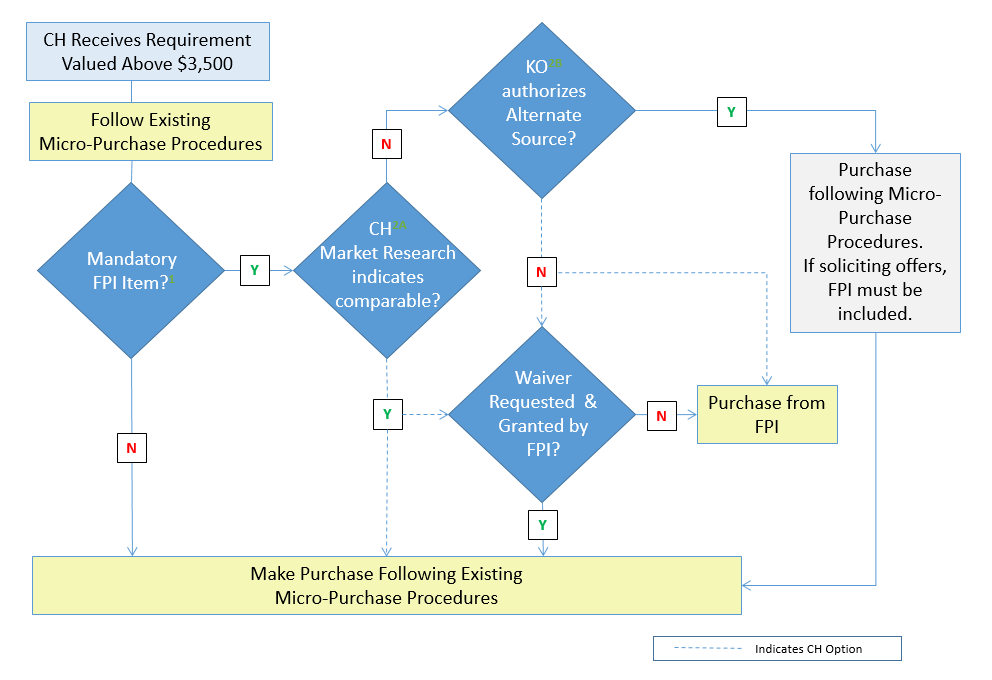

CHAPTER 1: PURPOSE, ROLES, AND RESPONSIBILITIES
1.1 Purpose
The Army Source Selection Supplement (AS3) implements and supplements the mandatory Department of Defense (DoD) Source Selection Procedures to establish consistent policies and procedures for Army source selections. The Federal Acquisition Regulation (FAR) and its supplements (Defense FAR Supplement (DFARS) and Army FAR Supplement (AFARS)) prescribe the general policies governing these acquisitions.
1.2 Applicability and Waivers
The AS3 applies to best value, negotiated, competitive source selections with an estimated value greater than $10 million. It may also be used as guidance in all other acquisitions. See DoD Source Selection Procedures, Paragraph 1.2, for applicability and exceptions.
The AS3 is not a stand-alone document, and shall be used in conjunction with FAR Part 15, DFARS Part 215 and the DoD Source Selection Procedures. Any conflicts shall be resolved through the Office of the Deputy Assistant Secretary of the Army (Procurement) (DASA(P)), Policy Directorate.
Any request for waiver of the DoD Source Selection Procedures shall be submitted by the cognizant Senior Contracting Official (SCO), through the Head of the Contracting Activity (HCA), to the DASA(P), Attn: Policy Directorate (SAAL-PP). The Office of the DASA(P) will process all waivers as follows:
For solicitations valued at $1 billion or more, waivers may only be approved with the express, written permission of the Director, Defense Procurement and Acquisition Policy (DPAP);
For solicitations valued below $1 billion, waivers must be approved by the DASA(P).
1.3 Best Value Continuum
Subjective Tradeoff . Use of subjective tradeoff is appropriate for most Army source selections. See Appendix B for more information. (Reference DOD Source Selection Procedures 1.3.1.3)
Value Adjusted Total Evaluated Price (VATEP). Use of VATEP may be most suitable for procuring developmental items when the Government can determine the value (or worth) of “better performance” and quantify it in the Request for Proposal (RFP). See Appendix B for more information. (Reference DOD Source Selection Procedures 1.3.1. 4 )
1.4 Source Selection Team Roles & Responsibilities
Source selection is a multi-disciplined team effort. The Source Selection Team (SST) should include representatives from appropriate functional areas such as contracting, small business, technical, logistics, cost/price, legal, and program management. User organizations should also be represented.
The success of any source selection is determined to a large degree by the personnel involved. Likewise, the Source Selection Authority (SSA), with assistance from the SCO, will ensure the appointment of people with the requisite skills, expertise, and experience to ensure the success of the source selection. This includes those members appointed to the Source Selection Advisory Council (SSAC).
The SCO is responsible for determining the capability of the organization to effectively resource the SST as set forth in the hierarchy of source selection expertise below (see Figure 1-1). In the event the SCO determines the required expertise is not obtainable, the HCA will be consulted. If the HCA concurs the resources are still unavailable, the DASA(P) will be notified and will assist in providing resources from other contracting activities, or assign the procurement to another contracting activity for execution.
|
Look within own organization for expertise. Identify and appoint Government personnel outside own organization with the requisite expertise. Identify junior personnel to grow expertise and experience in source selection by allowing them to participate on non-technical factors. If expertise does not exist, then move acquisition elsewhere. Consider establishing and/or hiring, on an ad hoc basis, qualified retired annuitants to supplement source selection teams. Establish an advance pool of experts to supplement on an ad hoc and rotational basis. In accordance with FAR Subparts 7.5 and 9.5, hire contractor experts to augment the Source Selection Evaluation Board (SSEB) ensuring there is no organizational conflict of interest or inclusion of inherently governmental functions. |
Figure 1-1: Hierarchy of Source Selection Expertise
The size and composition of the SST will vary depending upon the requirements of each acquisition. For example, major hardware acquisitions frequently involve requirements organizations from across the Army (or from other services on joint-service programs). In such cases, and when forming the SST, SSEB Factor/Subfactor teams should include evaluator representation from each major requirements organization. These evaluators should be assigned to the evaluation criteria associated with their specific area of requirements interest. Inclusion of technical evaluators who are subject matter experts on the requirement(s) being evaluated is essential to a successful evaluation process and fair/accurate assessment of the proposals, and absolutely critical where joint-service and/or multiple functional requirements are involved.
Whether the team is large or small, it should be structured to ensure teamwork, unity of purpose, and appropriate open communication among the team members throughout the process. This will facilitate a comprehensive evaluation and selection of the best value proposal.
Key Components of the SST
For source selections with a total estimated value of $100M or more, the SST shall consist of the SSA, a SSAC, and an SSEB. Each of these SST entities has distinct and separate functions (See Figure 1-2).

Figure 1-2: SST Responsibilities
The SSEB is usually comprised of multiple groups of evaluators who are responsible for evaluating specific areas of the proposal against the RFP requirements. Additionally, legal counsel, small business advisors, cost/price, and technical experts may also serve as SST advisors. The precise structure of the SSEB is a matter within the SSA’s discretion.
The information below supplements the Roles and Responsibilities found in the DoD Source Selection Procedures (see paragraph 1.4).
The SSA.
Appointment. The AFARS 5115.303 provides the policy on SSA appointments.
All appointed SSAs are considered procurement officials and are subject to the associated statutory / regulatory rules.
Once appointed, the SSA cannot further delegate their SSA authorities.
Note: The identity of the SSA shall be considered procurement sensitive and shall not be disclosed to anyone who has not signed a non-disclosure agreement for that RFP / acquisition.
Ensure the Source Selection Plan (SSP) and evaluation criteria are consistent with the requirements of the solicitation and applicable regulations.
The Procuring Contracting Officer (PCO).
No Army text.
The SSAC.
The SSAC will consist of senior Government personnel, and may include representation from the cognizant contracting office and legal office.
For Acquisition Category I/II Source Selections involving requirements organizations from across the Army (or from other services on joint-service programs), the SSAC must include representation from all significant requirements organizations. The SSAC representatives must be at an organization / grade level commensurate with the other members of the SSAC, usually military 0-6/GS-15 or higher.
The SSEB.
The SSEB Chairperson.
Ensure the SSEB members understand the evaluation criteria and establish a uniform approach to the evaluation and rating effort. Seek to build consensus among the SSEB members.
Isolate policy issues and major questions requiring decision by the SSA.
Relieve and replace SSEB members from assignment only in the event of a demonstrated emergency or other appropriate cause.
Arrange for the SSEB members to work compensatory time, when necessary, authorized, and approved.
Arrange for the needed administrative staff at the evaluation work site.
The SSEB Members.
Prepare the evaluation notices (ENs).
Brief the SSAC/SSA (as requested), and respond to comments / instructions from the SSAC/SSA.
Legal Counsel.
No Army text.
Other Advisors.
No Army text.
Program Manager (PM) / Requiring Activity (RA).
No Army text.
Administrative Support.
Each acquisition will vary in terms of the administrative support requirements. Figure 1-3 contains a checklist of some important requirements common to many acquisitions.
|
Adequate facilities (to include space for the evaluators and related meetings and for discussions with Offerors): Consider whether the facilities are of an adequate size, capable of segregation of committees, comfortable, properly furnished, secure, accessible to disabled persons, and close to support services such as copiers, restrooms, and eating facilities. Appropriate security controls, such as identification badges and access control. Adequate secure storage space for proposals and source selection materials. Appropriate computer hardware and software and related support. Adequate telephones, facsimile machines, copiers and/or printing services located in secure areas and secure audio/video teleconferencing capabilities. Adequate office supplies. Adequate lodging and transportation for personnel on temporary duty (TDY). |
Figure 1-3: Administrative Support Considerations